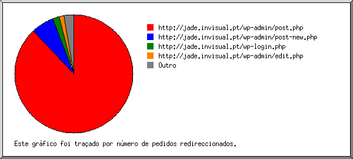
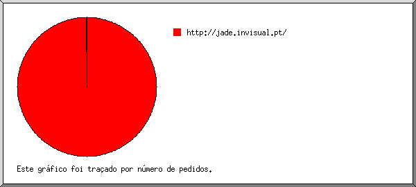
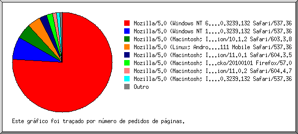
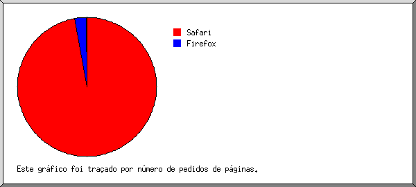
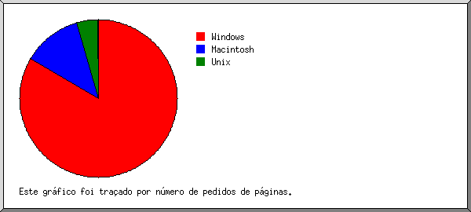
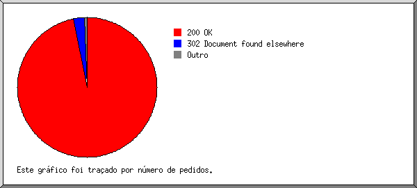
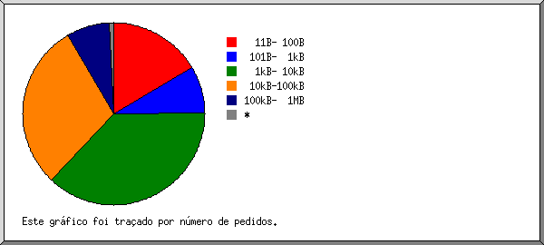
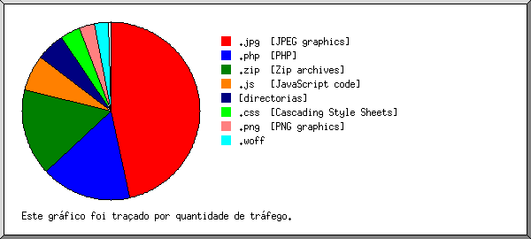
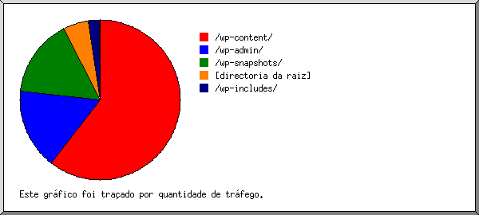

Estatísticas do Servidor Web de jade.invisual.pt
Estatísticas do Servidor Web de jade.invisual.pt
Começo do programa em Seg-12-Fev-2018 07:00.
Análise de pedidos desde Qua-24-Jan-2018 16:35 até Seg-12-Fev-2018 03:08 (18,44 dias).
Estatísticas do Servidor Web de jade.invisual.ptComeço do programa em Seg-12-Fev-2018 07:00.
Análise de pedidos desde Qua-24-Jan-2018 16:35 até Seg-12-Fev-2018 03:08 (18,44 dias).
(Ir a: Início | Sumário Geral | Relatório Mensal | Resumo Diário | Resumo Horário | Relatório de Domínios | Relatório de organizações | Relatório de referência redireccionada | Relatório de referência falhada | Relatório do sítio de referência | Relatório de Leitores | Resumo de Leitores | Relatório de Sistemas Operativos | Relatório de Códigos de Estado | Relatório de Tamanho de Ficheiro | Relatório de Tipos de Ficheiro | Relatório de Directorias | Relatório de Pedidos)
Os valores entre parêntesis referem-se aos 7 dias até 12-Fev-2018 07:00.
Pedidos atendidos: 8 605 (5)
Número médio de pedidos atendidos por dia: 466 (0)
Pedidos de páginas atendidos: 687 (2)
Número médio de pedidos de páginas atendidos por dia: 37 (0)
Pedidos não atendidos: 14 (0)
Pedidos redirigidos: 229 (1)
Ficheiros diferentes solicitados: 1 640 (3)
Servidores diferentes atendidos: 5 (2)
Tráfego total: 342,08 megabytes (50,45 kilobytes)
Tráfego médio transferido por dia: 18,55 megabytes (7,21 kilobytes)
(Ir a: Início | Sumário Geral | Relatório Mensal | Resumo Diário | Resumo Horário | Relatório de Domínios | Relatório de organizações | Relatório de referência redireccionada | Relatório de referência falhada | Relatório do sítio de referência | Relatório de Leitores | Resumo de Leitores | Relatório de Sistemas Operativos | Relatório de Códigos de Estado | Relatório de Tamanho de Ficheiro | Relatório de Tipos de Ficheiro | Relatório de Directorias | Relatório de Pedidos)
Cada unidade ( ) representa 20 pedidos de páginas ou fracção.
) representa 20 pedidos de páginas ou fracção.
| mês | N.ped | Pgs. | |
|---|---|---|---|
| Jan 2018 | 8323 | 674 |   |
| Fev 2018 | 282 | 13 | |
Mês mais movimentado: Jan 2018 (674 pedidos de páginas).
(Ir a: Início | Sumário Geral | Relatório Mensal | Resumo Diário | Resumo Horário | Relatório de Domínios | Relatório de organizações | Relatório de referência redireccionada | Relatório de referência falhada | Relatório do sítio de referência | Relatório de Leitores | Resumo de Leitores | Relatório de Sistemas Operativos | Relatório de Códigos de Estado | Relatório de Tamanho de Ficheiro | Relatório de Tipos de Ficheiro | Relatório de Directorias | Relatório de Pedidos)
Cada unidade () representa 10 pedidos de páginas ou fracção.
| dia | N.ped | Pgs. | |
|---|---|---|---|
| Dom | 1 | 0 | |
| Seg | 74 | 7 | |
| Ter | 140 | 16 | |
| Qua | 819 | 39 |  |
| Qui | 3002 | 243 |   |
| Sex | 4569 | 382 | |
| Sab | 0 | 0 |
(Ir a: Início | Sumário Geral | Relatório Mensal | Resumo Diário | Resumo Horário | Relatório de Domínios | Relatório de organizações | Relatório de referência redireccionada | Relatório de referência falhada | Relatório do sítio de referência | Relatório de Leitores | Resumo de Leitores | Relatório de Sistemas Operativos | Relatório de Códigos de Estado | Relatório de Tamanho de Ficheiro | Relatório de Tipos de Ficheiro | Relatório de Directorias | Relatório de Pedidos)
Cada unidade () representa 4 pedidos de páginas ou fracção.
| h | N.ped | Pgs. | |
|---|---|---|---|
| 00 | 12 | 1 | |
| 01 | 0 | 0 | |
| 02 | 2 | 1 | |
| 03 | 2 | 1 | |
| 04 | 0 | 0 | |
| 05 | 0 | 0 | |
| 06 | 0 | 0 | |
| 07 | 0 | 0 | |
| 08 | 0 | 0 | |
| 09 | 964 | 46 | |
| 10 | 1200 | 84 | |
| 11 | 1397 | 129 | |
| 12 | 1619 | 155 | |
| 13 | 66 | 0 | |
| 14 | 1657 | 164 | |
| 15 | 371 | 43 | |
| 16 | 77 | 2 | |
| 17 | 547 | 22 | |
| 18 | 630 | 35 | |
| 19 | 0 | 0 | |
| 20 | 61 | 4 | |
| 21 | 0 | 0 | |
| 22 | 0 | 0 | |
| 23 | 0 | 0 |
(Ir a: Início | Sumário Geral | Relatório Mensal | Resumo Diário | Resumo Horário | Relatório de Domínios | Relatório de organizações | Relatório de referência redireccionada | Relatório de referência falhada | Relatório do sítio de referência | Relatório de Leitores | Resumo de Leitores | Relatório de Sistemas Operativos | Relatório de Códigos de Estado | Relatório de Tamanho de Ficheiro | Relatório de Tipos de Ficheiro | Relatório de Directorias | Relatório de Pedidos)
Mostrando os domínios, ordenados por quantidade de tráfego.
| N.ped | %bytes | domínio |
|---|---|---|
| 8605 | 100% | [endereço numérico não traduzido] |
(Ir a: Início | Sumário Geral | Relatório Mensal | Resumo Diário | Resumo Horário | Relatório de Domínios | Relatório de organizações | Relatório de referência redireccionada | Relatório de referência falhada | Relatório do sítio de referência | Relatório de Leitores | Resumo de Leitores | Relatório de Sistemas Operativos | Relatório de Códigos de Estado | Relatório de Tamanho de Ficheiro | Relatório de Tipos de Ficheiro | Relatório de Directorias | Relatório de Pedidos)

Mostrando as organizações, ordenadas por número de pedidos.
| N.ped | %bytes | organização |
|---|---|---|
| 8436 | 97,02% | 213.22 |
| 143 | 2,96% | 89 |
| 22 | 0,01% | 94 |
| 2 | 0,01% | 129.78 |
| 2 | 66.133 |
(Ir a: Início | Sumário Geral | Relatório Mensal | Resumo Diário | Resumo Horário | Relatório de Domínios | Relatório de organizações | Relatório de referência redireccionada | Relatório de referência falhada | Relatório do sítio de referência | Relatório de Leitores | Resumo de Leitores | Relatório de Sistemas Operativos | Relatório de Códigos de Estado | Relatório de Tamanho de Ficheiro | Relatório de Tipos de Ficheiro | Relatório de Directorias | Relatório de Pedidos)

Mostrando os URLs de referência, ordenados por número de pedidos redireccionados.
(Ir a: Início | Sumário Geral | Relatório Mensal | Resumo Diário | Resumo Horário | Relatório de Domínios | Relatório de organizações | Relatório de referência redireccionada | Relatório de referência falhada | Relatório do sítio de referência | Relatório de Leitores | Resumo de Leitores | Relatório de Sistemas Operativos | Relatório de Códigos de Estado | Relatório de Tamanho de Ficheiro | Relatório de Tipos de Ficheiro | Relatório de Directorias | Relatório de Pedidos)
Mostrando os URLs de referência, ordenados por número de pedidos falhados.
| N.ped | URL |
|---|---|
| 1 | http://jade.invisual.pt/wp-admin/setup-config.php |
(Ir a: Início | Sumário Geral | Relatório Mensal | Resumo Diário | Resumo Horário | Relatório de Domínios | Relatório de organizações | Relatório de referência redireccionada | Relatório de referência falhada | Relatório do sítio de referência | Relatório de Leitores | Resumo de Leitores | Relatório de Sistemas Operativos | Relatório de Códigos de Estado | Relatório de Tamanho de Ficheiro | Relatório de Tipos de Ficheiro | Relatório de Directorias | Relatório de Pedidos)

Mostrando os sítios de referência, ordenados por número de pedidos.
| N.ped | sítio |
|---|---|
| 8367 | http://jade.invisual.pt/ |
| 1 | http://94.46.176.249/ |
(Ir a: Início | Sumário Geral | Relatório Mensal | Resumo Diário | Resumo Horário | Relatório de Domínios | Relatório de organizações | Relatório de referência redireccionada | Relatório de referência falhada | Relatório do sítio de referência | Relatório de Leitores | Resumo de Leitores | Relatório de Sistemas Operativos | Relatório de Códigos de Estado | Relatório de Tamanho de Ficheiro | Relatório de Tipos de Ficheiro | Relatório de Directorias | Relatório de Pedidos)

Mostrando os leitores com pelo menos 1 pedido de uma página, ordenados por número de pedidos de páginas.
| N.ped | Pgs. | Leitor |
|---|---|---|
| 6913 | 520 | Mozilla/5.0 (Windows NT 6.1; Win64; x64) AppleWebKit/537.36 (KHTML, like Gecko) Chrome/63.0.3239.132 Safari/537.36 |
| 350 | 50 | Mozilla/5.0 (Windows NT 10.0; Win64; x64) AppleWebKit/537.36 (KHTML, like Gecko) Chrome/63.0.3239.132 Safari/537.36 |
| 512 | 34 | Mozilla/5.0 (Macintosh; Intel Mac OS X 10_10_5) AppleWebKit/603.3.8 (KHTML, like Gecko) Version/10.1.2 Safari/603.3.8 |
| 145 | 29 | Mozilla/5.0 (Linux; Android 8.1.0; Pixel XL Build/OPM1.171019.012) AppleWebKit/537.36 (KHTML, like Gecko) Chrome/63.0.3239.111 Mobile Safari/537.36 |
| 143 | 17 | Mozilla/5.0 (Macintosh; Intel Mac OS X 10_11_6) AppleWebKit/604.3.5 (KHTML, like Gecko) Version/11.0.1 Safari/604.3.5 |
| 229 | 14 | Mozilla/5.0 (Macintosh; Intel Mac OS X 10.12; rv:57.0) Gecko/20100101 Firefox/57.0 |
| 127 | 8 | Mozilla/5.0 (Macintosh; Intel Mac OS X 10_12_6) AppleWebKit/604.4.7 (KHTML, like Gecko) Version/11.0.2 Safari/604.4.7 |
| 75 | 8 | Mozilla/5.0 (Macintosh; Intel Mac OS X 10_13_2) AppleWebKit/537.36 (KHTML, like Gecko) Chrome/63.0.3239.132 Safari/537.36 |
| 41 | 2 | Mozilla/5.0 (Macintosh; Intel Mac OS X 10.10; rv:57.0) Gecko/20100101 Firefox/57.0 |
| 44 | 2 | Mozilla/5.0 (Windows NT 6.1; Win64; x64; rv:57.0) Gecko/20100101 Firefox/57.0 |
| 17 | 1 | WordPress/4.9.2; http://jade.invisual.pt |
| 7 | 0 | [não listados: 3 Leitores] |
(Ir a: Início | Sumário Geral | Relatório Mensal | Resumo Diário | Resumo Horário | Relatório de Domínios | Relatório de organizações | Relatório de referência redireccionada | Relatório de referência falhada | Relatório do sítio de referência | Relatório de Leitores | Resumo de Leitores | Relatório de Sistemas Operativos | Relatório de Códigos de Estado | Relatório de Tamanho de Ficheiro | Relatório de Tipos de Ficheiro | Relatório de Directorias | Relatório de Pedidos)

Mostrando os leitores com pelo menos 1 pedido de uma página, ordenados por número de pedidos de páginas.
| no. | N.ped | Pgs. | Leitor |
|---|---|---|---|
| 1 | 8265 | 666 | Safari |
| 7483 | 607 | Safari/537 | |
| 512 | 34 | Safari/603 | |
| 270 | 25 | Safari/604 | |
| 2 | 314 | 18 | Firefox |
| 314 | 18 | Firefox/57 | |
| 3 | 18 | 1 | WordPress |
| 18 | 1 | WordPress/4 | |
| 6 | 0 | [não listados: 2 Leitores] |
(Ir a: Início | Sumário Geral | Relatório Mensal | Resumo Diário | Resumo Horário | Relatório de Domínios | Relatório de organizações | Relatório de referência redireccionada | Relatório de referência falhada | Relatório do sítio de referência | Relatório de Leitores | Resumo de Leitores | Relatório de Sistemas Operativos | Relatório de Códigos de Estado | Relatório de Tamanho de Ficheiro | Relatório de Tipos de Ficheiro | Relatório de Directorias | Relatório de Pedidos)

Mostrando os Sistemas Operativos, ordenados por número de pedidos de páginas.
| no. | N.ped | Pgs. | Sistema Operativo |
|---|---|---|---|
| 1 | 7307 | 572 | Windows |
| 6957 | 522 | Windows desconhecido | |
| 350 | 50 | Windows NT | |
| 2 | 1127 | 83 | Macintosh |
| 3 | 145 | 29 | Unix |
| 145 | 29 | Linux | |
| 4 | 24 | 1 | Sistema Operativo desconhecido |
(Ir a: Início | Sumário Geral | Relatório Mensal | Resumo Diário | Resumo Horário | Relatório de Domínios | Relatório de organizações | Relatório de referência redireccionada | Relatório de referência falhada | Relatório do sítio de referência | Relatório de Leitores | Resumo de Leitores | Relatório de Sistemas Operativos | Relatório de Códigos de Estado | Relatório de Tamanho de Ficheiro | Relatório de Tipos de Ficheiro | Relatório de Directorias | Relatório de Pedidos)

Mostrando os códigos de estado, por ordem numérica.
| N.ped | cod. estado |
|---|---|
| 8573 | 200 OK |
| 2 | 301 Document moved permanently |
| 227 | 302 Document found elsewhere |
| 32 | 304 Not modified since last retrieval |
| 14 | 404 Document not found |
(Ir a: Início | Sumário Geral | Relatório Mensal | Resumo Diário | Resumo Horário | Relatório de Domínios | Relatório de organizações | Relatório de referência redireccionada | Relatório de referência falhada | Relatório do sítio de referência | Relatório de Leitores | Resumo de Leitores | Relatório de Sistemas Operativos | Relatório de Códigos de Estado | Relatório de Tamanho de Ficheiro | Relatório de Tipos de Ficheiro | Relatório de Directorias | Relatório de Pedidos)

| tamanho | N.ped | %bytes |
|---|---|---|
| 0 | 32 | |
| 1B- 10B | 0 | |
| 11B- 100B | 1432 | 0,02% |
| 101B- 1kB | 707 | 0,11% |
| 1kB- 10kB | 3193 | 2,92% |
| 10kB-100kB | 2542 | 25,49% |
| 100kB- 1MB | 671 | 47,68% |
| 1MB- 10MB | 27 | 7,99% |
| 10MB-100MB | 1 | 15,78% |
(Ir a: Início | Sumário Geral | Relatório Mensal | Resumo Diário | Resumo Horário | Relatório de Domínios | Relatório de organizações | Relatório de referência redireccionada | Relatório de referência falhada | Relatório do sítio de referência | Relatório de Leitores | Resumo de Leitores | Relatório de Sistemas Operativos | Relatório de Códigos de Estado | Relatório de Tamanho de Ficheiro | Relatório de Tipos de Ficheiro | Relatório de Directorias | Relatório de Pedidos)

Mostrando as extensões com pelo menos 0,1% do tráfego, ordenadas por quantidade de tráfego.
| N.ped | %bytes | extensão |
|---|---|---|
| 1448 | 46,58% | .jpg [JPEG graphics] |
| 1853 | 16,40% | .php [PHP] |
| 1 | 15,78% | .zip [Zip archives] |
| 2171 | 6,58% | .js [JavaScript code] |
| 687 | 5,21% | [directorias] |
| 1198 | 3,61% | .css [Cascading Style Sheets] |
| 896 | 2,84% | .png [PNG graphics] |
| 118 | 2,59% | .woff |
| 56 | 0,35% | .svg |
| 177 | 0,06% | [não listadas: 5 extensões] |
(Ir a: Início | Sumário Geral | Relatório Mensal | Resumo Diário | Resumo Horário | Relatório de Domínios | Relatório de organizações | Relatório de referência redireccionada | Relatório de referência falhada | Relatório do sítio de referência | Relatório de Leitores | Resumo de Leitores | Relatório de Sistemas Operativos | Relatório de Códigos de Estado | Relatório de Tamanho de Ficheiro | Relatório de Tipos de Ficheiro | Relatório de Directorias | Relatório de Pedidos)

Mostrando as directorias com pelo menos 0,01% do tráfego, ordenadas por quantidade de tráfego.
| N.ped | %bytes | directoria |
|---|---|---|
| 4897 | 60,31% | /wp-content/ |
| 1872 | 16,41% | /wp-admin/ |
| 2 | 15,82% | /wp-snapshots/ |
| 815 | 5,17% | [directoria da raiz] |
| 1012 | 2,28% | /wp-includes/ |
| 7 | 0,01% | [não listadas: 2 directorias] |
(Ir a: Início | Sumário Geral | Relatório Mensal | Resumo Diário | Resumo Horário | Relatório de Domínios | Relatório de organizações | Relatório de referência redireccionada | Relatório de referência falhada | Relatório do sítio de referência | Relatório de Leitores | Resumo de Leitores | Relatório de Sistemas Operativos | Relatório de Códigos de Estado | Relatório de Tamanho de Ficheiro | Relatório de Tipos de Ficheiro | Relatório de Directorias | Relatório de Pedidos)

Mostrando os ficheiros com pelo menos 20 pedidos, ordenados por número de pedidos.
| N.ped | %bytes | hora ant. | ficheiro |
|---|---|---|---|
| 1406 | 0,59% | 1/Fev/18 11:26 | /wp-admin/admin-ajax.php |
| 191 | 26/Jan/18 14:57 | /wp-admin/admin-ajax.php?action=oembed-cache&post=5 | |
| 681 | 5,17% | 12/Fev/18 03:08 | / |
| 241 | 0,01% | 26/Jan/18 14:57 | /wp-content/themes/jade/nectar/options/fields/button_set/field_button_set.js |
| 241 | 0,12% | 26/Jan/18 14:57 | /wp-content/themes/jade/nectar/options/css/custom-theme/jquery-ui-1.10.0.custom.css |
| 228 | 13,07% | 26/Jan/18 14:57 | /wp-admin/post.php |
| 191 | 11,79% | 26/Jan/18 14:57 | /wp-admin/post.php?post=5&action=edit&message=1 |
| 10 | 0,62% | 26/Jan/18 14:11 | /wp-admin/post.php?post=5&action=edit |
| 201 | 0,11% | 26/Jan/18 14:57 | /wp-content/themes/jade/nectar/options/fields/upload/gallery.js |
| 115 | 1/Fev/18 12:57 | /favicon.ico | |
| 100 | 2,51% | 1/Fev/18 12:57 | /wp-content/themes/jade/css/fonts/fontawesome-webfont.woff |
| 100 | 2,51% | 1/Fev/18 12:57 | /wp-content/themes/jade/css/fonts/fontawesome-webfont.woff?v=4.2 |
| 64 | 0,41% | 2/Fev/18 00:33 | /wp-content/plugins/js_composer_salient/assets/css/js_composer.min.css |
| 64 | 0,41% | 2/Fev/18 00:33 | /wp-content/plugins/js_composer_salient/assets/css/js_composer.min.css?ver=5.2.4 |
| 64 | 0,01% | 2/Fev/18 00:33 | /wp-content/plugins/contact-form-7/includes/css/styles.css |
| 64 | 0,01% | 2/Fev/18 00:33 | /wp-content/plugins/contact-form-7/includes/css/styles.css?ver=4.9.2 |
| 62 | 0,07% | 1/Fev/18 12:57 | /wp-content/plugins/contact-form-7/includes/js/scripts.js |
| 62 | 0,07% | 1/Fev/18 12:57 | /wp-content/plugins/contact-form-7/includes/js/scripts.js?ver=4.9.2 |
| 62 | 0,11% | 1/Fev/18 12:57 | /wp-content/plugins/js_composer_salient/assets/js/dist/js_composer_front.min.js |
| 62 | 0,11% | 1/Fev/18 12:57 | /wp-content/plugins/js_composer_salient/assets/js/dist/js_composer_front.min.js?ver=5.2.4 |
| 55 | 0,16% | 1/Fev/18 12:57 | /wp-content/themes/jade/css/font-awesome.min.css |
| 51 | 0,15% | 1/Fev/18 12:57 | /wp-content/themes/jade/css/font-awesome.min.css?ver=4.6.3 |
| 53 | 0,01% | 1/Fev/18 12:57 | /wp-content/themes/jade/nectar/assets/functions/ajax-search/wpss-search-suggest.js |
| 53 | 0,01% | 1/Fev/18 12:57 | /wp-includes/js/mediaelement/wp-mediaelement.min.js |
| 53 | 0,01% | 1/Fev/18 12:57 | /wp-includes/js/mediaelement/wp-mediaelement.min.js?ver=4.9.2 |
| 53 | 0,01% | 1/Fev/18 12:57 | /wp-includes/js/wp-a11y.min.js |
| 53 | 0,01% | 1/Fev/18 12:57 | /wp-includes/js/wp-a11y.min.js?ver=4.9.2 |
| 53 | 0,37% | 1/Fev/18 12:57 | /wp-content/themes/jade/css/responsive.css |
| 53 | 0,37% | 1/Fev/18 12:57 | /wp-content/themes/jade/css/responsive.css?ver=8.5.1 |
| 53 | 1,64% | 1/Fev/18 12:57 | /wp-content/themes/jade/style.css |
| 53 | 1,64% | 1/Fev/18 12:57 | /wp-content/themes/jade/style.css?ver=8.5.1 |
| 52 | 0,55% | 1/Fev/18 12:57 | /wp-includes/js/mediaelement/mediaelement-and-player.min.js |
| 52 | 0,55% | 1/Fev/18 12:57 | /wp-includes/js/mediaelement/mediaelement-and-player.min.js?ver=4.2.6-78496d1 |
| 52 | 0,02% | 1/Fev/18 12:57 | /wp-content/themes/jade/css/rgs.css |
| 52 | 0,02% | 1/Fev/18 12:57 | /wp-content/themes/jade/css/rgs.css?ver=8.5.0 |
| 52 | 0,28% | 1/Fev/18 12:57 | /wp-content/themes/jade/js/select2.min.js |
| 52 | 0,28% | 1/Fev/18 12:57 | /wp-content/themes/jade/js/select2.min.js?ver=3.5.2 |
| 52 | 0,51% | 1/Fev/18 12:57 | /wp-content/themes/jade/js/jquery.fullPage.min.js |
| 52 | 0,51% | 1/Fev/18 12:57 | /wp-content/themes/jade/js/jquery.fullPage.min.js?ver=8.5.2 |
| 52 | 0,04% | 1/Fev/18 12:57 | /wp-content/themes/jade/css/magnific.css |
| 52 | 0,04% | 1/Fev/18 12:57 | /wp-content/themes/jade/css/magnific.css?ver=6.2 |
| 52 | 1,82% | 1/Fev/18 12:57 | /wp-content/themes/jade/js/init.js |
| 52 | 1,82% | 1/Fev/18 12:57 | /wp-content/themes/jade/js/init.js?ver=8.5.2 |
| 52 | 0,02% | 1/Fev/18 12:57 | /wp-includes/js/mediaelement/wp-mediaelement.min.css |
| 52 | 0,02% | 1/Fev/18 12:57 | /wp-includes/js/mediaelement/wp-mediaelement.min.css?ver=4.9.2 |
| 52 | 0,07% | 1/Fev/18 12:57 | /wp-content/themes/jade/css/ascend.css |
| 52 | 0,07% | 1/Fev/18 12:57 | /wp-content/themes/jade/css/ascend.css?ver=8.5 |
| 52 | 0,03% | 1/Fev/18 12:57 | /wp-content/themes/jade/css/select2.css |
| 52 | 0,03% | 1/Fev/18 12:57 | /wp-content/themes/jade/css/select2.css?ver=6.2 |
| 52 | 0,04% | 1/Fev/18 12:57 | /wp-includes/js/mediaelement/mediaelementplayer-legacy.min.css |
| 52 | 0,04% | 1/Fev/18 12:57 | /wp-includes/js/mediaelement/mediaelementplayer-legacy.min.css?ver=4.2.6-78496d1 |
| 52 | 0,06% | 1/Fev/18 12:57 | /wp-content/themes/jade/css/fullpage.css |
| 52 | 0,06% | 1/Fev/18 12:57 | /wp-content/themes/jade/css/fullpage.css?ver=8.5.0 |
| 52 | 0,49% | 1/Fev/18 12:57 | /wp-includes/js/jquery/jquery.js |
| 52 | 0,49% | 1/Fev/18 12:57 | /wp-includes/js/jquery/jquery.js?ver=1.12.4 |
| 51 | 0,04% | 1/Fev/18 12:57 | /wp-includes/js/jquery/ui/position.min.js |
| 51 | 0,04% | 1/Fev/18 12:57 | /wp-includes/js/jquery/ui/position.min.js?ver=1.11.4 |
| 51 | 0,04% | 1/Fev/18 12:57 | /wp-includes/js/jquery/ui/menu.min.js |
| 51 | 0,04% | 1/Fev/18 12:57 | /wp-includes/js/jquery/ui/menu.min.js?ver=1.11.4 |
| 51 | 0,04% | 1/Fev/18 12:57 | /wp-content/themes/jade/js/superfish.js |
| 51 | 0,04% | 1/Fev/18 12:57 | /wp-content/themes/jade/js/superfish.js?ver=1.4.8 |
| 51 | 0,09% | 1/Fev/18 12:57 | /wp-content/themes/jade/js/modernizr.js |
| 51 | 0,09% | 1/Fev/18 12:57 | /wp-content/themes/jade/js/modernizr.js?ver=2.6.2 |
| 51 | 0,20% | 1/Fev/18 12:57 | /wp-content/themes/jade/js/magnific.js |
| 51 | 0,20% | 1/Fev/18 12:57 | /wp-content/themes/jade/js/magnific.js?ver=7.0.1 |
| 51 | 0,04% | 1/Fev/18 12:57 | /wp-includes/js/jquery/ui/widget.min.js |
| 51 | 0,04% | 1/Fev/18 12:57 | /wp-includes/js/jquery/ui/widget.min.js?ver=1.11.4 |
| 51 | 0,06% | 1/Fev/18 12:57 | /wp-includes/js/jquery/jquery-migrate.min.js |
| 51 | 0,06% | 1/Fev/18 12:57 | /wp-includes/js/jquery/jquery-migrate.min.js?ver=1.4.1 |
| 51 | 0,04% | 1/Fev/18 12:57 | /wp-includes/js/jquery/ui/autocomplete.min.js |
| 51 | 0,04% | 1/Fev/18 12:57 | /wp-includes/js/jquery/ui/autocomplete.min.js?ver=1.11.4 |
| 51 | 0,06% | 1/Fev/18 12:57 | /wp-includes/js/wp-emoji-release.min.js |
| 51 | 0,06% | 1/Fev/18 12:57 | /wp-includes/js/wp-emoji-release.min.js?ver=4.9.2 |
| 51 | 0,01% | 1/Fev/18 12:57 | /wp-includes/js/wp-embed.min.js |
| 51 | 0,01% | 1/Fev/18 12:57 | /wp-includes/js/wp-embed.min.js?ver=4.9.2 |
| 51 | 0,05% | 1/Fev/18 12:57 | /wp-content/themes/jade/js/touchswipe.min.js |
| 51 | 0,05% | 1/Fev/18 12:57 | /wp-content/themes/jade/js/touchswipe.min.js?ver=1.0 |
| 50 | 0,03% | 1/Fev/18 12:57 | /wp-includes/js/jquery/ui/core.min.js |
| 50 | 0,03% | 1/Fev/18 12:57 | /wp-includes/js/jquery/ui/core.min.js?ver=1.11.4 |
| 50 | 0,01% | 1/Fev/18 12:57 | /wp-includes/js/mediaelement/mediaelement-migrate.min.js |
| 50 | 0,01% | 1/Fev/18 12:57 | /wp-includes/js/mediaelement/mediaelement-migrate.min.js?ver=4.9.2 |
| 49 | 0,53% | 1/Fev/18 12:57 | /wp-content/themes/jade/js/nectar-slider.js |
| 49 | 0,53% | 1/Fev/18 12:57 | /wp-content/themes/jade/js/nectar-slider.js?ver=8.5.0 |
| 49 | 0,07% | 1/Fev/18 12:57 | /wp-content/themes/jade/css/nectar-slider.css |
| 49 | 0,07% | 1/Fev/18 12:57 | /wp-content/themes/jade/css/nectar-slider.css?ver=8.5.0 |
| 45 | 1,19% | 1/Fev/18 10:43 | /wp-admin/load-scripts.php |
| 44 | 0,02% | 1/Fev/18 12:57 | /wp-content/uploads/2018/01/logo_preto.png |
| 44 | 0,02% | 1/Fev/18 12:57 | /wp-content/uploads/2018/01/logo_branco.png |
| 41 | 10,98% | 1/Fev/18 12:57 | /wp-content/uploads/2018/01/sqsqs.jpg |
| 40 | 0,61% | 2/Fev/18 00:33 | /wp-content/uploads/2018/01/PREMIO.png |
| 38 | 0,02% | 26/Jan/18 12:47 | /wp-admin/async-upload.php |
| 35 | 0,03% | 1/Fev/18 12:57 | /wp-content/themes/jade/img/textures/diagonal_line.png |
| 34 | 0,43% | 2/Fev/18 00:33 | /wp-content/uploads/2018/01/jade_peca_003.jpg |
| 34 | 0,25% | 2/Fev/18 00:33 | /wp-content/uploads/2018/01/jade_peca_012.jpg |
| 34 | 0,21% | 1/Fev/18 12:57 | /wp-content/uploads/2018/01/jade_peca_009.jpg |
| 33 | 0,22% | 2/Fev/18 00:33 | /wp-content/uploads/2018/01/jade_peca_013.jpg |
| 33 | 0,25% | 2/Fev/18 00:33 | /wp-content/uploads/2018/01/jade_peca_014.jpg |
| 32 | 0,19% | 1/Fev/18 12:57 | /wp-content/uploads/2018/01/jade_peca_011.jpg |
| 32 | 0,23% | 1/Fev/18 12:57 | /wp-content/uploads/2018/01/jade_peca_004.jpg |
| 32 | 0,24% | 1/Fev/18 12:57 | /wp-content/uploads/2018/01/jade_peca_005.jpg |
| 32 | 0,32% | 1/Fev/18 12:57 | /wp-content/uploads/2018/01/jade_peca_015.jpg |
| 32 | 0,27% | 1/Fev/18 12:57 | /wp-content/uploads/2018/01/jade_peca_007.jpg |
| 32 | 0,22% | 1/Fev/18 12:57 | /wp-content/uploads/2018/01/jade_peca_010.jpg |
| 31 | 0,17% | 1/Fev/18 12:57 | /wp-content/uploads/2018/01/jade_peca_006.jpg |
| 30 | 0,31% | 1/Fev/18 12:57 | /wp-content/uploads/2018/01/dwddwd.jpg |
| 29 | 0,21% | 1/Fev/18 10:43 | /wp-admin/edit.php |
| 18 | 0,13% | 26/Jan/18 10:21 | /wp-admin/edit.php?post_type=nectar_slider |
| 29 | 2,04% | 2/Fev/18 00:33 | /wp-content/uploads/2018/01/sqsqssqsqs.jpg |
| 28 | 0,87% | 1/Fev/18 12:57 | /wp-content/uploads/2018/01/apresentacao2.jpg |
| 28 | 0,22% | 26/Jan/18 14:55 | /wp-includes/css/dashicons.min.css |
| 24 | 0,19% | 26/Jan/18 14:55 | /wp-includes/css/dashicons.min.css?ver=4.9.2 |
| 28 | 3,18% | 1/Fev/18 12:57 | /wp-content/uploads/2018/01/apresentacao1.jpg |
| 27 | 7,99% | 2/Fev/18 00:33 | /wp-content/uploads/2018/01/qsqssqsq.jpg |
| 26 | 0,76% | 1/Fev/18 12:57 | /wp-content/uploads/2018/01/fundo_teste.jpg |
| 26 | 2,06% | 26/Jan/18 11:01 | /wp-content/uploads/2018/01/1.jpg |
| 26 | 3,42% | 26/Jan/18 11:01 | /wp-content/uploads/2018/01/2.jpg |
| 26 | 1,45% | 26/Jan/18 11:01 | /wp-content/uploads/2018/01/3.jpg |
| 24 | 0,03% | 26/Jan/18 14:55 | /wp-includes/css/admin-bar.min.css |
| 24 | 0,03% | 26/Jan/18 14:55 | /wp-includes/css/admin-bar.min.css?ver=4.9.2 |
| 23 | 0,02% | 26/Jan/18 14:55 | /wp-includes/js/admin-bar.min.js |
| 23 | 0,02% | 26/Jan/18 14:55 | /wp-includes/js/admin-bar.min.js?ver=4.9.2 |
| 23 | 0,38% | 1/Fev/18 10:43 | /wp-admin/load-styles.php |
| 22 | 0,02% | 1/Fev/18 12:57 | /wp-content/uploads/2018/01/logo_branco_retina.png |
| 2364 | 31,59% | 12/Fev/18 02:46 | [não listados: 608 ficheiros] |